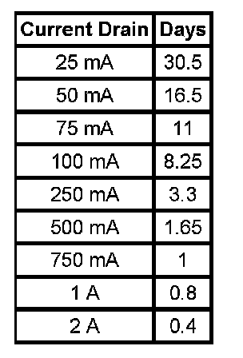

Battery Electrical Drain/Parasitic Load Test
BATTERY ELECTRICAL DRAIN/PARASITIC LOAD TEST
TOOLS REQUIRED
J 38758 Parasitic Draw Test Switch
DIAGNOSTIC AIDS
- Be sure to rule out any possible obvious influences, such as customer error or aftermarket equipment.
- Customer driving habits, such as regular short trips. This does not allow enough time to properly charge the battery. Refer to Battery Description and Operation.
- Verify that the battery and charging system are in proper working order. Refer to Battery Charging and Charging System Test. Battery Charging Charging System Test
- A battery discharging for no apparent reason while the vehicle is parked can be caused by an intermittent draw, such as a module waking up, or a continuous draw, such as a dome light or stuck relay.
- Some systems and modules such as OnStar(R), and regulated voltage control (RVC), if equipped, are designed to wake-up, perform a task, and go back asleep at regular intervals. Refer to Body Control System Description and Operation for the system or modules description and operation.
- Remote keyless entry (RKE) will wake up due to an outside input. Refer to Keyless Entry System Description and Operation for the system description and operation.
- IMPORTANT: The battery specification listed below is a generic specification. Refer to Battery Usage when testing the battery.

The battery run down time will vary depending on cold cranking amperage (CCA) and reserve capacity (RC). If the CCA and RC are higher, then the battery run down time would be longer. If the CCA and RC are lower, then the battery run down time would be shorter. The graph below indicates roughly how many days a 690 CCA battery with at 110 min. RC (60.5 AH) starting at 80 percent state of charge will last with a constant current draw until it reaches 50 percent state of charge. Differences in battery rating and temperature will affect the results.
Load Test
CAUTION: Refer to Battery Disconnect Caution.
NOTE:
- Do not turn the parasitic draw test switch to the OFF position with the engine running. Damage will occur to the vehicle's electrical system.
- The test switch must be in the ON position when removing the fuses in order to maintain continuity in the electrical system. This avoids damaging the digital multimeter due to accidental overloading, such as a door being opened to change a fuse.
IMPORTANT: The switch knob on the J 38758 is marked ON and OFF. When the switch knob is in the ON position, the circuit is closed and electrical current will pass through the switch. When the switch knob is in the OFF position, the circuit is open and electrical current will not pass through the switch.
1. Disconnect the battery negative cable from the battery negative terminal.
2. Install the male end of the J 38758 to the battery ground terminal.
3. Turn the J 38758 knob to the OFF position.
4. Install the battery negative cable to the female end of the J 38758.
5. Turn the J 38758 knob to the ON position.
6. Road test the vehicle and activate ALL of the accessories, including the radio and air conditioning. This may take up to 30 minutes.
7. Park the vehicle. Turn the ignition switch to the OFF position and remove the ignition switch key.
8. Connect a 10A fused jumper wire to the test switch tool terminals.
9. Turn the J 38758 knob to the OFF position. The current now flows through the jumper wire.
10. Wait 1 minute. If the fuse blows, install an inductive ammeter and go to step 19.
11. Remove the fused jumper wire.
12. Set a digital multimeter to the 10A scale.
13. Connect the digital multimeter to the test switch tool terminals.
14. Turn the J 38758 knob to the OFF position. The current flows now through the digital multimeter.
15. Wait 1 minute. Check and record the current reading.
1. When there is a current reading of 2A or less, turn the J 38758 knob to the ON position. The electrical current will now pass through the switch.
2. Then switch the digital multimeter down to the 2A scale for a more accurate reading when the J 38758 knob is turned OFF.
16. Turn the J 38758 knob to the OFF position. Wait 15 minutes for most vehicles.
17. Check and record the current reading.
18. Note the battery reserve capacity, amp hour rating. Refer to Battery Usage.
1. Divide the reserve capacity by 4, amp hour rating by 2.4.
2. Compare this to the multimeter milliampere reading taken in the previous step. The parasitic current drain should not exceed this number. Example: If a battery has a reserve capacity of 100 minutes, (60 A/H) the current drain should not exceed 25 mA.
19. If excessive current drain is not found at this time and there are no other apparent causes, complete the following:
1. Using the MIN/MAX function of the digital multimeter, monitor the parasitic drain overnight or during the day. This will determine if something has been activated during that time frame.
2. NOTE: The test switch must be in the ON position when removing the fuses in order to maintain continuity in the electrical system. This avoids damaging the digital multimeter due to accidental overloading, such as a door being opened to change a fuse.
IMPORTANT: Removing fuses, relays, and connectors to determine the failure area may wake up modules. You must wait for these modules to go to sleep or use the sleep function on the scan tool.
When the vehicle has an unacceptable amount of parasitic current drain, remove each fuse one at a time until the current drain falls to an acceptable level. This will indicate which circuit is causing the drain. Refer to Power Distribution Schematics to diagnose exactly which part of the suspect circuit is causing the parasitic drain. In some cases a non-fused circuit or component, such as a relay, is the cause of excessive parasitic current drain.
3. Repeat the parasitic current drain test procedure after any repair has been completed to make sure that the parasitic current drain is at an acceptable level.
4. When the cause of the excessive current drain has been located and repaired, remove the J 38758.
20. Connect the battery negative cable to the battery negative terminal.